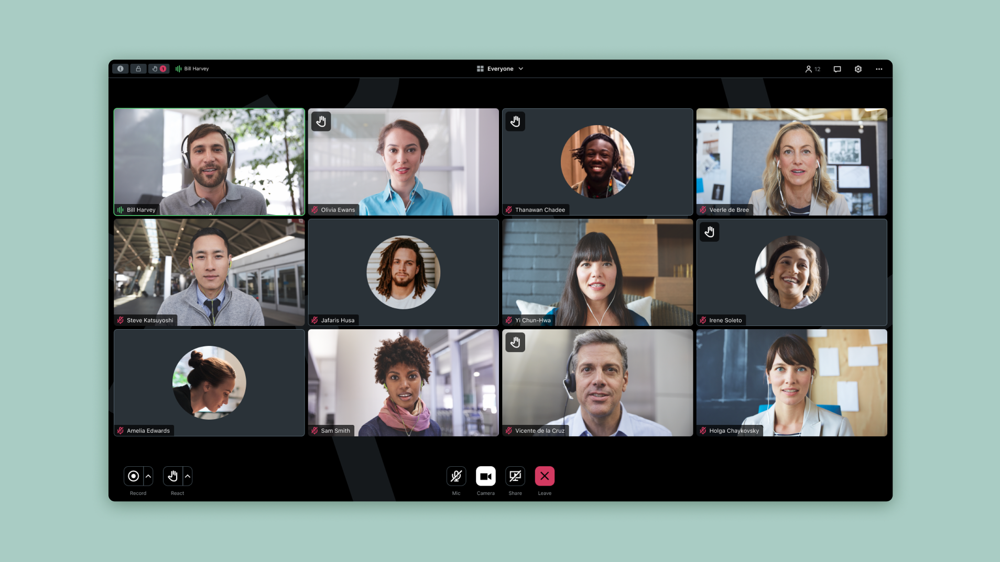
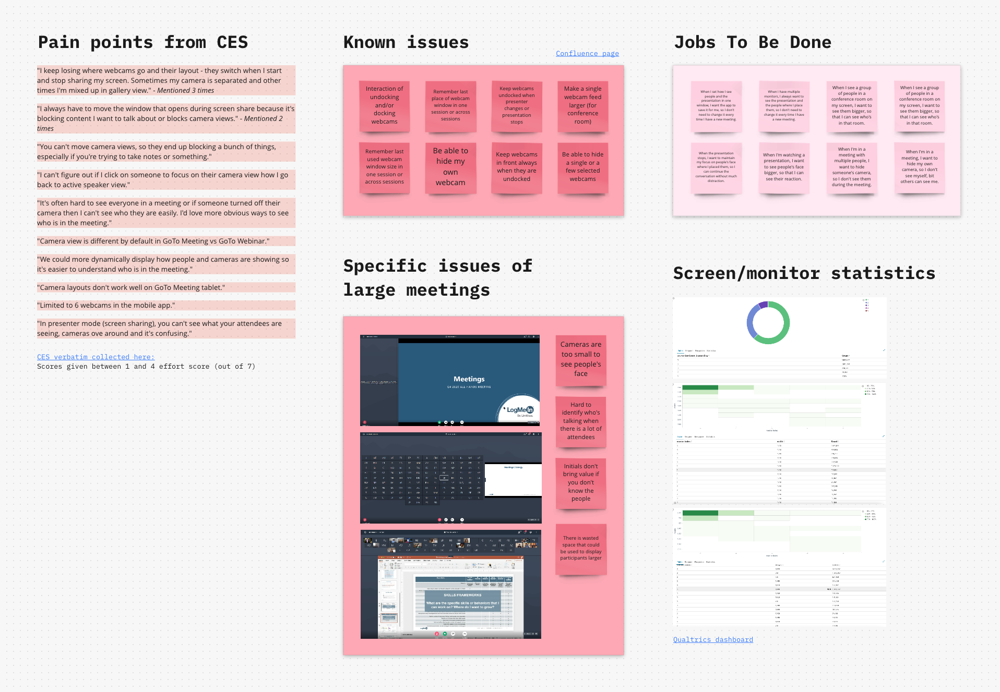
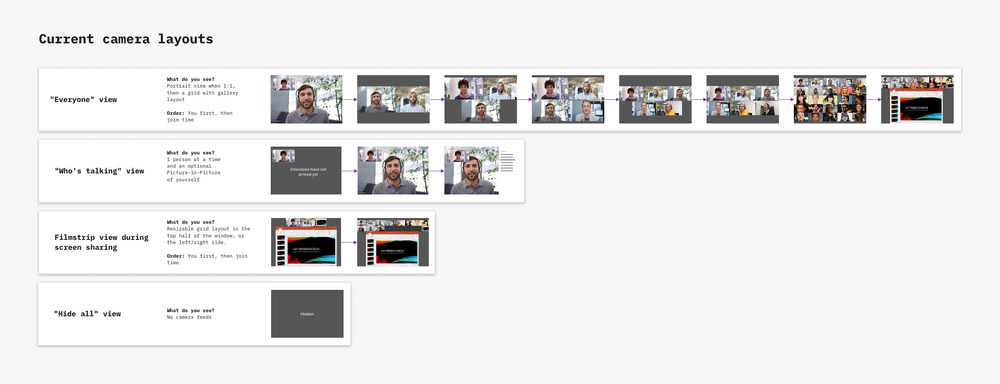
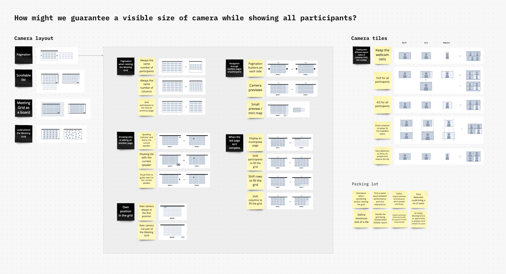
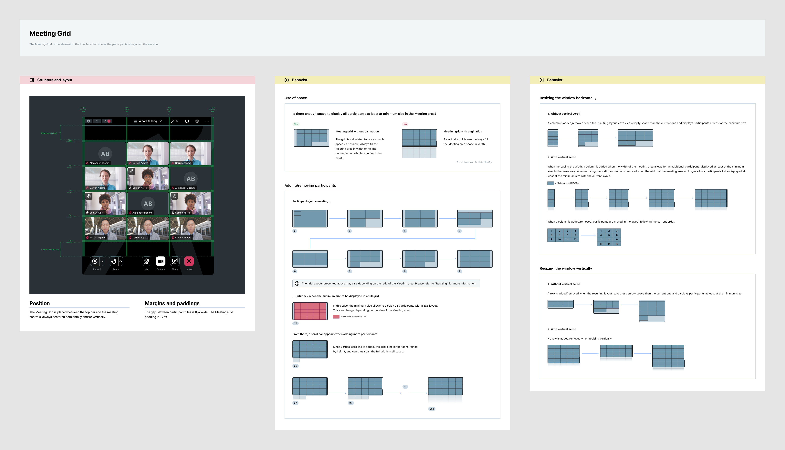
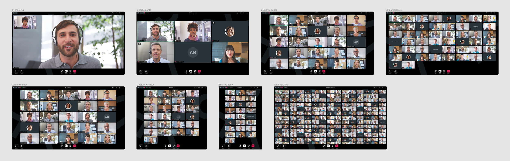
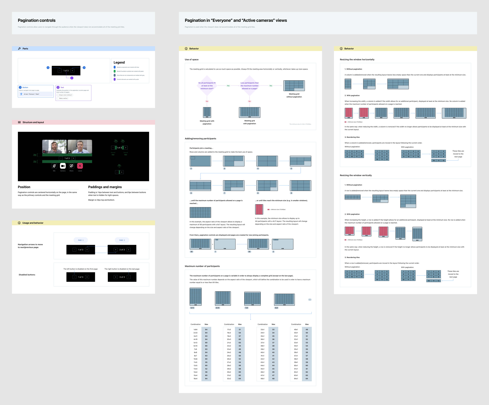
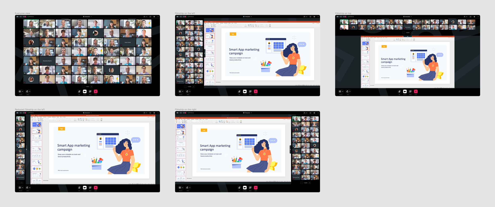
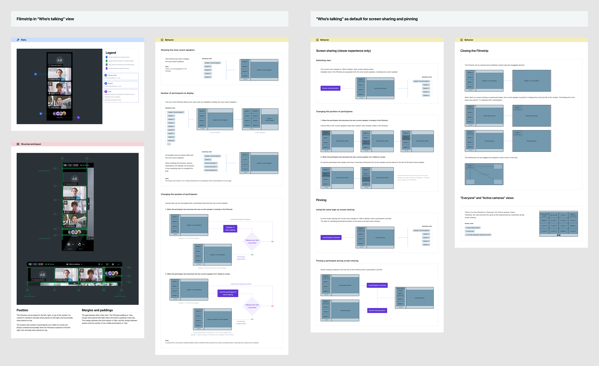
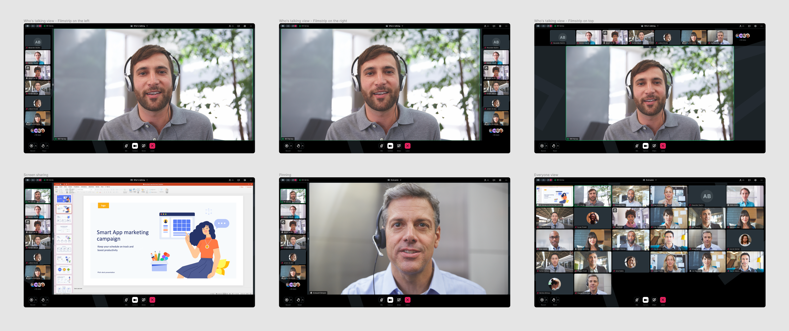

Improve the large meeting experience with better camera layouts
January 2021 - GoTo Meeting Web & Desktop
Problem statement
A key point in GoTo’s recent business strategy was to unify its complex portfolio of multiple native applications into a single product and, like many other tech companies, transition to a framework based on web technologies called Electron. Thus, the entire codebase had to be reworked, including the interface implementation of GoTo Meeting, an online videoconferencing application that hosts 80+ million annual online meetings.
The core of the meeting experience is the camera layout, also called “Meeting Grid”. With a global shift to remote work since the beginning of the pandemic, online meetings are no longer limited to collaborative sessions between a few people but can also extend to several use cases and now accommodate more participants, as during company-wide gatherings for example.
Rebuilding the Meeting Grid was an opportunity to fix known issues and create a solid foundation that could scale for large meetings on the web and desktop versions of GoTo Meeting.
My role
I was in charge of the entire design process for this initiative, including user testing in collaboration with a UX researcher and close teamwork with the engineering team.
I was also in contact with UX designers from the Events team, as the Meeting Grid was also intended to be used for webinars and training as part of the unification effort.
Discovery
As a first step to understand the scope and identify potential improvements, I searched for existing insights about the Meeting Grid.
Pain points and known issues had already been collected by UX Research, including problems specific to large meetings, regarding participants visibility: during a presentation, the interface is split to display shared content while keeping the audience visible in a smaller space, making cameras too small to see participants and find the current speaker in the audience, especially for visually impaired users. Additionally, displaying initials for inactive cameras can be confusing for large meetings as multiple participants may have the same initials, and in some cases there is wasted space around the grid that could be used to display larger tiles.
It was important to know the current behavior of the Meeting Grid, for this I studied the different layout possibilities that can vary depending on the selected view, the number of participants and the size of the window. Engineers from the team also shared metrics with me about the screen resolutions of our users, which was helpful when designing the MVP.
Discovery board about the Meeting Grid
Current Meeting Grid behavior
Ideation
With the insights learned from the discovery phase, I started thinking about different solutions to maintain an acceptable size of camera while having all participants easily accessible.
Regarding the layout, pagination or scrolling seemed to be simple options to bring into the product, compared to less common ideas such as having an open canvas or a less strict space in which participants could move. I also explored possibilities for certain characteristics of the Meeting Grid, like its responsiveness, the visibility of the current speaker and how to make non-visible tiles appear on screen… Regarding camera tiles, there were serval ways to handle different aspect ratios and optimize the display of a feed in its container, such as cropping or using a fluid size for the tiles.
In parallel, the engineering team initiated the development of a Proof-Of-Concept, to exchange more quickly on the considered concepts and adjust design choices based on technical limitations.
Ideation board
Building an MVP
The purpose of this MVP was to create the key building blocks of the new Meeting Grid, a solid foundation that will help participants be more visible and feel more engaged in a meeting.
After discussing the different options with the team, we decided to use a scrolling pattern for this first increment, as it was the solution to easily browse the audience with the highest impact and minimal effort.
Jobs To Be Done
When I’m in a meeting, I want to see the webcam of the participants correctly so that I can look at their reaction.
Delivery
Lorem
MVP specifications
Meeting Grid examples
Research
Lorem

Caption
Refining the solution
Lorem
Caption
Delivery
Lorem
Pagination specifications
Pagination in the meeting interface
Caption
Caption
Outcome
Lorem